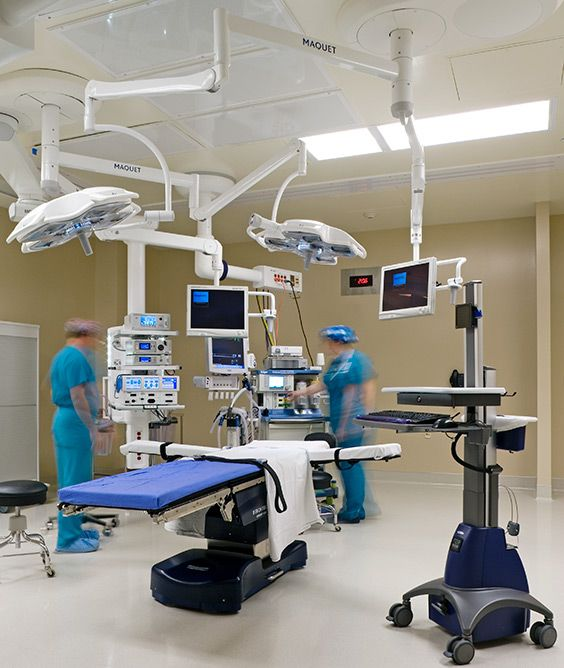

Sobre Nosso Centro Cirúrgico
Centro Cirúrgico
O Centro Cirúrgico é o espaço onde são realizados todos os procedimentos anestésicos e cirúrgicos. Sua estrutura comporta 16 salas cirúrgicas, operando 24 horas por dia, de forma ininterrupta, 17 leitos no CRPA (Centro de Recuperação Pós-Anestésica) e uma sala de hemodinâmica. Compete ao Centro Cirúrgico possibilitar a realização dos procedimentos anestésicos e cirúrgicos nas melhores condições de segurança e conforto para o paciente. As equipes médica e de enfermagem, e demais profissionais, prestam atenção integral ao paciente no ato do pré, trans e pós-operatório imediato. As cirurgias realizadas em maior número no +VIDA são as ortopédicas, decorrentes de traumas, o que se explica pelo próprio perfil de urgência e emergência do hospital. Em segundo lugar estão as cirurgias gerais, que se referem àquelas na região do abdômen (laparotomias), vesícula, vias biliares, pâncreas, tratamento das apendicites, na região do tórax, e outras. Também são realizados procedimentos cirúrgicos nas especialidades de urologia, cirurgia plástica, neurocirugia, cirurgia vascular, torácica, bucomaxilar e outros (procedimentos endoscópicos ou oftalmológicos, por exemplo). O número de cirurgias realizadas no hospital tem aumentado desde o início de suas atividades em 1973.